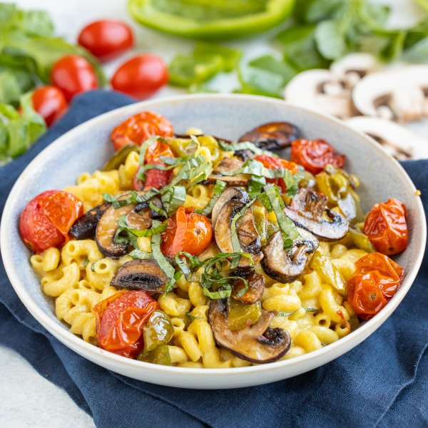

Vegan "Mac & Cheese" with Roasted Mushrooms, Tomatoes, Peppers & Basil

Total Time
35 min
Nutrition (Per Serving)
605.4 kcalCalories
25.5 gProtein
80.3 gCarbs
22.1 gFat
Full nutrition table
| Calories | 605.4 kcal |
| Total fat | 22.1 g |
| Saturated fat | 2.9 g |
| Trans fat | 0 g |
| Cholesterol | 0 mg |
| Sodium | 100.2 mg |
| Carbohydrates | 80.3 g |
| Fiber | 11.5 g |
| Sugars | 9.9 g |
| Protein | 25.5 g |
| Potassium | 1212.6 mg |
| Calcium | 273.6 mg |
| Iron | 5.2 mg |
| Vitamin A | 1474.7 IU |
| Vitamin C | 69.1 mg |
| Vitamin D | 43.8 IU |
Cookware
Ingredients
- 12 fl ozalmond milk, unsweetened
- 1 lbcremini mushrooms
- 1 small pkgfresh basil
- 2 pintsgrape tomatoes
- 2green bell peppers
- 10 ozmacaroni (elbow) pasta
- ⅔ cupnutritional yeast flakes
- arrowroot starch/powder
- black pepper
- Dijon mustard
- extra virgin olive oil
- garlic powder
- onion powder
- salt
Steps
- Preheat oven to 425°F.
- Fill a large pot halfway with hot water (from the tap), cover, and bring to a boil. Uncover, add salt and pasta, and stir for a few seconds. Cook until desired firmness, 8-10 minutes. Remove from heat and drain in a colander. (Reserve pot for later use.)1 tsp salt
10 oz macaroni (elbow) pasta - Meanwhile, wash and dry the fresh produce.1 lb cremini mushrooms
2 green bell peppers
2 pints grape tomatoes
1 small pkg fresh basil - Thinly slice mushrooms and transfer to a large baking sheet pan.
- Trim, seed, and medium dice bell peppers; add to the baking sheet with the mushrooms.
- Add tomatoes to the baking sheet. Drizzle veggies with oil and season with spices; toss to combine, then spread out in an even layer.4 tsp extra virgin olive oil
1 tsp garlic powder
1 tsp salt
½ tsp black pepper - Place baking sheet in the oven and roast, tossing once, until veggies are tender and tomatoes start to burst, about 15 minutes. Remove from oven.
- When the pasta is done, place almond milk, nutritional yeast, oil, arrowroot starch, Dijon, onion powder, and garlic powder in the reserved pot; whisk until smooth. Place the pot over medium heat and bring the sauce to a simmer, whisking occasionally.12 fl oz (1 ½ cups) almond milk, unsweetened
⅔ cup nutritional yeast flakes
¼ cup extra virgin olive oil
2 tbsp arrowroot starch/powder
2 tbsp Dijon mustard
½ tsp onion powder
½ tsp garlic powder - Once the sauce is simmering, continue to cook, whisking constantly, until the sauce becomes thick and stretchy, 1-2 minutes more. Remove from heat.
- Pick basil leaves off the stems, roll up crosswise, and thinly slice into ribbons.
- Return drained pasta to the pot with the cheese sauce, add half of the basil (reserving the rest for serving), and stir to combine.
- If needed, warm the mac & cheese over medium heat, stirring constantly, until heated through, 1-2 minutes.
- To serve, divide mac & cheese between plates or bowls; top with roasted veggies and reserved basil. Enjoy!